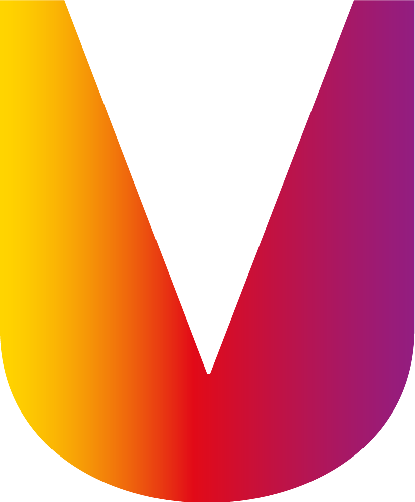

TU SEMESTRE
Primer semestre
0 materias·0 sesiones semanales

UNIVERSIDAD DEL VALLE DE PUEBLA
Cultiva tu semana.
Preparando tu espacio
TU SEMANA, BIEN CULTIVADA
Tu agenda de hoy, sin complicaciones.
EN POCAS PALABRAS
Haz espacio para aprender y respirar.
PASO A PASO
PLANIFICA CON CALMA
Todo en su lugar. Elige un día para revisar sus clases y actividades.
Tip para la semana
Guarda unos minutos entre clases para cambiar de salón sin prisas.
TU MAPA ACADÉMICO
Encuentra una clase por nombre, profesor, día o salón.
Materias del semestre
¿Cambió tu semestre? Las materias se actualizan desde data/horario.js sin modificar esta pantalla.
TU APP, A TU MANERA
Atajos prácticos para llevar tu horario contigo, con o sin conexión.
Tu horario vive en este dispositivo. Sin cuenta, sin anuncios y sin enviar tus materias a un servidor.
HECHAS PARA AHORRARTE TIEMPO
COMODIDAD VISUAL
TU SEMESTRE
0 materias·0 sesiones semanales
IDENTIDAD UNIVERSITARIA
Mi Horario es una herramienta personal de organización académica, no una aplicación oficial de la universidad.